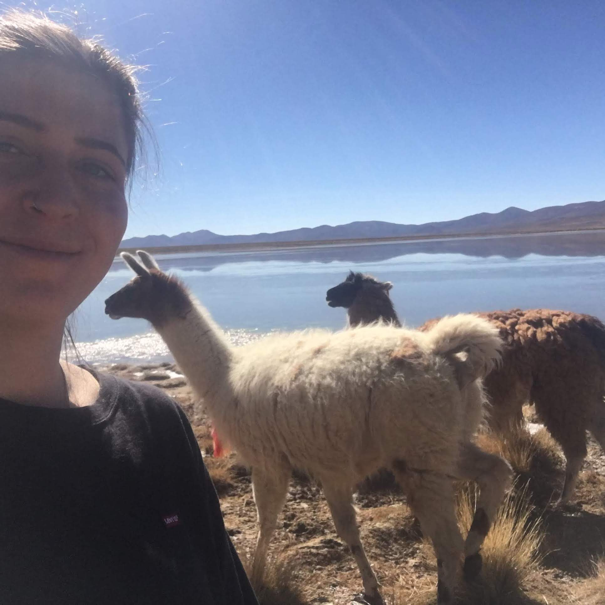
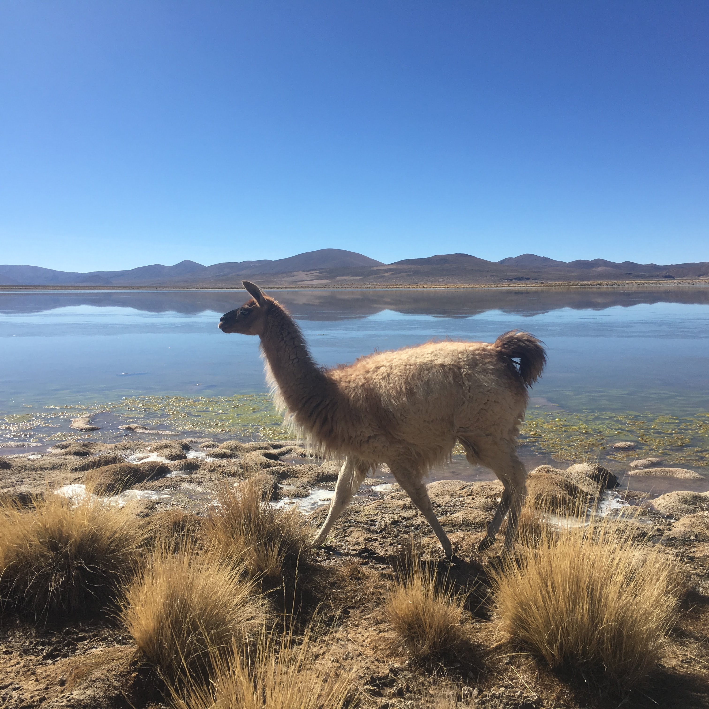
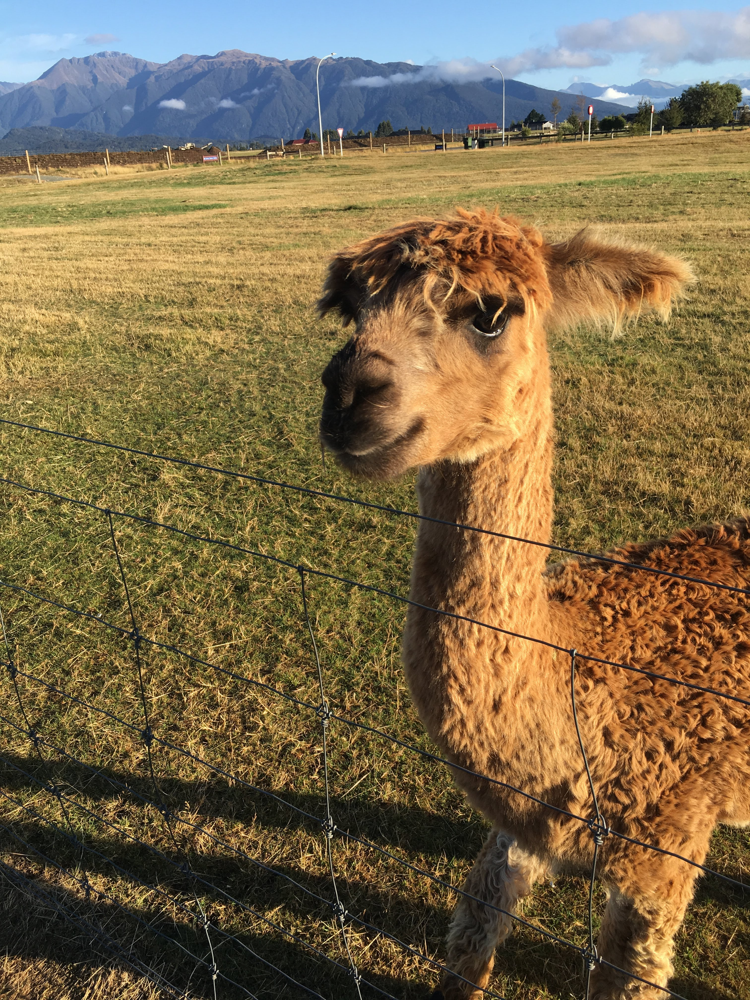

| Why Alpaca Clothing | Gallery | Feedback |
|---|
This is my first website, and I decided to make it about something I absolutely love! Recently I discovered a clothing brand that really connected to me. This is a sports wear brand called Arms of Andes which is made out of alpaca wool! As you can probably already tell from the image above I really love alpacas (and lamas)! In what follows I will discuss what I was looking for in a clothing brand and how Arms of Andes fulfilled these criterias and many many more. I hope you will find it as interesting as I do and enjoy the pictures of alpacas (and some lamas because why not). Please feel free to leave some. Feedback as well.
For my whole life I have been searching for the perfect clothing brand and I think I have finally found it. Funnily enough I also LOVE alpacas and when making alpaca clothing they are treated like queens! So I couldn't imagine anything better
Finally I have found clothing that meets all these needs and honestly it is such a relief. From now on I will only be wearing alpaca clothing from Arms of Andes.
A brand for the nature explorers who desire functional, ecological and ethical gear. They are a brother and a sister raised in Peruvian household from the USA. They use the most luxurious, natural fibers of the world’s oldest civilization: Inca Empire.
More of a picture person like me? Find our more here
I LOVE feedback, please let me know what you think about my website!